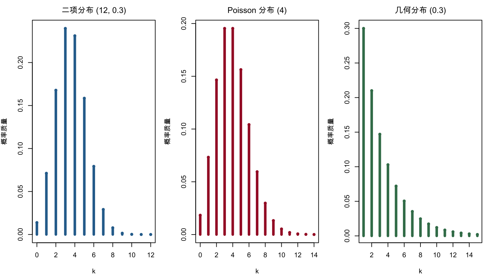

第 3 常见分布族
本章对应原课件 chap-3.tex 及四个子文件，依次整理常用离散分布、连续分布、指数族和位置—尺度族。各分布统一给出支撑集、概率函数、矩母函数（若存在）、均值和方差。原稿中参数化彼此冲突之处以概率函数为准作最小更正，详见 migration_notes.md。
3.1 离散分布总览
记 \(q=1-p\)，\(M_X(t)=E(e^{tX})\)。下表覆盖原课件列出的全部离散分布。
| 分布 | 支撑集与概率质量函数 | MGF | 均值；方差 |
|---|---|---|---|
| Bernoulli\((p)\) | \(k\in\{0,1\}\)，\(p^kq^{1-k}\) | \(q+pe^t\) | \(p\)；\(pq\) |
| Binomial\((n,p)\) | \(k=0,\ldots,n\)，\(\binom nkp^kq^{n-k}\) | \((q+pe^t)^n\) | \(np\)；\(npq\) |
| 离散均匀\((0,\ldots,n)\) | \(k=0,\ldots,n\)，\(1/(n+1)\) | \(\dfrac{e^{(n+1)t}-1}{(n+1)(e^t-1)}\) | \(n/2\)；\(n(n+2)/12\) |
| Geometric\((p)\) | \(k=1,2,\ldots\)，\(pq^{k-1}\) | \(\dfrac{pe^t}{1-qe^t}\) | \(1/p\)；\(q/p^2\) |
| Hypergeometric\((N,K,n)\) | \(\dfrac{\binom Kk\binom{N-K}{n-k}}{\binom Nn}\) | 通常用有限和计算 | \(nK/N\)；\(\dfrac{nK(N-K)(N-n)}{N^2(N-1)}\) |
| Negative Binomial\((r,p)\) | \(k=0,1,\ldots\)，\(\binom{k+r-1}{k}p^rq^k\) | \(\left(\dfrac{p}{1-qe^t}\right)^r\) | \(rq/p\)；\(rq/p^2\) |
| Poisson\((\lambda)\) | \(k=0,1,\ldots\)，\(e^{-\lambda}\lambda^k/k!\) | \(\exp\{\lambda(e^t-1)\}\) | \(\lambda\)；\(\lambda\) |
离散均匀 MGF 在 \(t=0\) 处按连续延拓取 1；Geometric MGF 的定义域为 \(t<-\log q\)。超几何变量的取值范围为
\[ \max(0,n-N+K)\le k\le\min(n,K). \]
这里的负二项变量记录第 \(r\) 次成功前的失败数。若变量改为获得第 \(r\) 次成功所需的总试验次数，则应整体平移 \(r\)。
3.2 离散分布的生成机制
- 一次成功/失败试验产生 Bernoulli 变量，\(n\) 个独立 Bernoulli 变量之和服从 Binomial 分布。
- Geometric 分布记录第一次成功所需的试验次数；\(r\) 段成功前失败数之和产生上述 Negative Binomial 分布。
- Hypergeometric 对应有限总体不放回抽样，Binomial 对应独立重复抽样。
- Poisson 描述固定时间或空间内相互独立的稀有事件计数，也是 \(n\) 大、\(p\) 小且 \(np\) 稳定时的 Binomial 极限。
old_par <- par(no.readonly = TRUE)
par(mfrow = c(1, 3), mar = c(4, 4, 2.5, 1), family = course_plot_family())
k1 <- 0:12
plot(k1, dbinom(k1, 12, 0.3), type = "h", lwd = 4, col = "#2C6E9B",
xlab = "k", ylab = "概率质量", main = "二项分布 (12, 0.3)")
points(k1, dbinom(k1, 12, 0.3), pch = 16, col = "#2C6E9B")
k2 <- 0:14
plot(k2, dpois(k2, 4), type = "h", lwd = 4, col = "#A51C30",
xlab = "k", ylab = "概率质量", main = "Poisson 分布 (4)")
points(k2, dpois(k2, 4), pch = 16, col = "#A51C30")
k3 <- 1:15
plot(k3, dgeom(k3 - 1, 0.3), type = "h", lwd = 4, col = "#3E7C59",
xlab = "k", ylab = "概率质量", main = "几何分布 (0.3)")
points(k3, dgeom(k3 - 1, 0.3), pch = 16, col = "#3E7C59")
图 3.1: 二项、Poisson 与几何分布的概率质量函数
par(old_par)3.3 连续分布：有限支撑与正半轴
Beta 与均匀分布
若 \(\alpha,\beta>0\)，\(X\sim\operatorname{Beta}(\alpha,\beta)\) 的密度为
\[ f(x)=\frac{x^{\alpha-1}(1-x)^{\beta-1}}{B(\alpha,\beta)},\qquad 0<x<1. \]
其均值和方差为
\[ E(X)=\frac{\alpha}{\alpha+\beta},\qquad \operatorname{Var}(X)=\frac{\alpha\beta}{(\alpha+\beta)^2(\alpha+\beta+1)}. \]
MGF 对所有实数 \(t\) 存在，可写成 \({}_1F_1(\alpha;\alpha+\beta;t)\)，但通常没有初等闭式。\(\alpha=\beta=1\) 时得到 \(U(0,1)\)。
一般地，\(X\sim U(a,b)\) 满足
\[ f(x)=\frac1{b-a},\quad a<x<b,\qquad M_X(t)=\frac{e^{bt}-e^{at}}{t(b-a)}\ (t\ne0),\quad M_X(0)=1, \]
\[ E(X)=\frac{a+b}{2},\qquad \operatorname{Var}(X)=\frac{(b-a)^2}{12}. \]
Gamma、指数与卡方分布
采用形状—尺度参数化 \(X\sim\operatorname{Gamma}(k,\theta)\)：
\[ f(x)=\frac{x^{k-1}e^{-x/\theta}}{\Gamma(k)\theta^k},\quad x>0,\qquad M_X(t)=(1-\theta t)^{-k},\quad t<1/\theta, \]
\[ E(X)=k\theta,\qquad \operatorname{Var}(X)=k\theta^2. \]
当 \(k=1\) 时得到指数分布。若用率参数 \(\lambda=1/\theta\)，则
\[ f(x)=\lambda e^{-\lambda x},\quad M_X(t)=\frac{\lambda}{\lambda-t},\quad E(X)=\frac1\lambda,\quad \operatorname{Var}(X)=\frac1{\lambda^2}. \]
令 \(k=\nu/2,\theta=2\)，得到 \(\chi_\nu^2\) 分布：
\[ f(x)=\frac{x^{\nu/2-1}e^{-x/2}}{2^{\nu/2}\Gamma(\nu/2)},\quad x>0,\qquad M_X(t)=(1-2t)^{-\nu/2},\quad t<1/2, \]
且 \(E(X)=\nu\)、\(\operatorname{Var}(X)=2\nu\)。
Weibull 分布
若形状 \(k>0\)、尺度 \(\lambda>0\)，则
\[ f(x)=\frac{k}{\lambda}\left(\frac{x}{\lambda}\right)^{k-1} \exp\left\{-\left(\frac{x}{\lambda}\right)^k\right\},\qquad x>0, \]
\[ E(X)=\lambda\Gamma\left(1+\frac1k\right),\qquad \operatorname{Var}(X)=\lambda^2\left[\Gamma\left(1+\frac2k\right)- \Gamma^2\left(1+\frac1k\right)\right]. \]
这些矩对任意 \(k>0\) 都存在。MGF 在 \(k>1\) 时处处有限；\(k=1\) 是指数分布；\(0<k<1\) 时任意 \(t>0\) 都发散。
3.4 连续分布：实轴、重尾与抽样分布
正态、Logistic、Laplace 与对数正态
正态分布 \(N(\mu,\sigma^2)\) 满足
\[ f(x)=\frac1{\sqrt{2\pi\sigma^2}}e^{-(x-\mu)^2/(2\sigma^2)},\qquad M_X(t)=e^{\mu t+\sigma^2t^2/2},\quad E(X)=\mu,\quad \operatorname{Var}(X)=\sigma^2. \]
位置 \(\mu\)、尺度 \(s>0\) 的 Logistic 分布满足
\[ f(x)=\frac{e^{-(x-\mu)/s}}{s\{1+e^{-(x-\mu)/s}\}^2},\qquad M_X(t)=e^{\mu t}\frac{\pi st}{\sin(\pi st)},\quad |t|<1/s, \]
均值为 \(\mu\)，方差为 \(\pi^2s^2/3\)。
双指数（Laplace）分布满足
\[ f(x)=\frac{\lambda}{2}e^{-\lambda|x-\mu|},\qquad M_X(t)=e^{\mu t}\frac{\lambda^2}{\lambda^2-t^2},\quad |t|<\lambda, \]
均值为 \(\mu\)，方差为 \(2/\lambda^2\)。
若 \(\log X\sim N(\mu,\sigma^2)\)，则 \(X\) 服从对数正态分布，
\[ f(x)=\frac1{x\sigma\sqrt{2\pi}} e^{-(\log x-\mu)^2/(2\sigma^2)},\quad x>0, \]
\[ E(X)=e^{\mu+\sigma^2/2},\qquad \operatorname{Var}(X)=e^{2\mu+\sigma^2}(e^{\sigma^2}-1). \]
其所有正整数阶矩有限，但任意 \(t>0\) 时 \(M_X(t)\) 发散，因此零点邻域内的 MGF 不存在。
Cauchy、Pareto、Student \(t\) 与 \(F\)
位置 \(x_0\)、尺度 \(\gamma>0\) 的 Cauchy 密度为
\[ f(x)=\frac1{\pi\gamma\{1+((x-x_0)/\gamma)^2\}}. \]
它没有 MGF，均值与方差也不存在。
下界 \(x_m>0\)、形状 \(\alpha>0\) 的 Pareto 密度为
\[ f(x)=\frac{\alpha x_m^\alpha}{x^{\alpha+1}},\qquad x\ge x_m. \]
其 MGF 不在零点双侧邻域存在；\(\alpha>1\) 时均值为 \(\alpha x_m/(\alpha-1)\)，\(\alpha>2\) 时方差为 \(\alpha x_m^2/\{(\alpha-1)^2(\alpha-2)\}\)。
自由度 \(\nu\) 的 Student \(t\) 密度为
\[ f(x)=\frac{\Gamma((\nu+1)/2)}{\sqrt{\nu\pi}\Gamma(\nu/2)} \left(1+\frac{x^2}{\nu}\right)^{-(\nu+1)/2}. \]
其 MGF 不存在；\(\nu>1\) 时均值为 0，\(\nu>2\) 时方差为 \(\nu/(\nu-2)\)。\(1<\nu\le2\) 时方差无穷，\(\nu\le1\) 时均值不存在。
若 \(X\sim F(d_1,d_2)\)，则 \(x>0\) 时
\[ f(x)=\frac{\Gamma((d_1+d_2)/2)}{\Gamma(d_1/2)\Gamma(d_2/2)} \left(\frac{d_1}{d_2}\right)^{d_1/2}x^{d_1/2-1} \left(1+\frac{d_1}{d_2}x\right)^{-(d_1+d_2)/2}. \]
它没有 MGF；\(d_2>2\) 时 \(E(X)=d_2/(d_2-2)\)，\(d_2>4\) 时
\[ \operatorname{Var}(X)= \frac{2d_2^2(d_1+d_2-2)}{d_1(d_2-2)^2(d_2-4)}. \]
x <- seq(-6, 6, length.out = 1200)
matplot(x, cbind(dnorm(x), dt(x, 3), dcauchy(x)), type = "l", lty = 1,
lwd = 2.2, col = c("#2C6E9B", "#A51C30", "#3E7C59"),
xlab = "x", ylab = "density", family = course_plot_family())
legend("topright", c("Normal", "t(3)", "Cauchy"), lty = 1, lwd = 2.2,
col = c("#2C6E9B", "#A51C30", "#3E7C59"), bty = "n")
图 3.2: 标准正态、t(3) 与标准 Cauchy 密度的尾部比较
3.5 分布之间的关系
原课件用下图概括常见变换、求和和极限关系。实线多表示精确变换或封闭性，虚线多表示极限近似；箭头旁的参数条件是关系成立的关键。

图 3.3: 原课件中的常见分布关系图
例如：独立 Poisson 变量之和仍为 Poisson；独立正态变量之和仍为正态；标准正态平方和产生卡方；两个独立卡方变量除以各自自由度后的比值产生 \(F\)；若 \(U\sim U(0,1)\)，则 \(-\lambda^{-1}\log U\) 服从率为 \(\lambda\) 的指数分布。
3.6 指数族的定义
定义 3.1 若 \(Y\) 的概率密度或概率质量函数可写成
\[ f(y;\theta,\phi)=\exp\left\{ \frac{y\theta-b(\theta)}{a(\phi)}+c(y,\phi) \right\}, \tag{3.1} \]
其中 \(\theta\) 是自然参数，\(\phi\) 是尺度、干扰或离散参数，\(a,b,c\) 是已知函数，则称其属于单参数指数离散族。无额外离散参数时可令 \(a(\phi)=1\)。
以下性质还要求支撑集不随 \(\theta\) 改变，并允许在积分或求和号下对 \(\theta\) 求导。
3.7 正态与 Gamma 的指数族表示
若 \(Y\sim N(\mu,\sigma^2)\)，则
\[ f(y)=\exp\left\{ \frac{y\mu-\mu^2/2}{\sigma^2} -\frac{y^2}{2\sigma^2}-\frac12\log(2\pi\sigma^2) \right\}. \]
与式 (3.1) 比较可得
\[ \theta=\mu,\quad a(\phi)=\sigma^2,\quad b(\theta)=\frac{\theta^2}{2},\quad c(y,\phi)=-\frac{y^2}{2\sigma^2}-\frac12\log(2\pi\sigma^2). \]
对形状 \(\alpha\)、率 \(\beta\) 的 Gamma 分布，令 \(\mu=\alpha/\beta\)、\(\phi=1/\alpha\)，则
\[ \theta=-\frac1\mu,\quad a(\phi)=\phi,\quad b(\theta)=-\log(-\theta), \]
\[ c(y,\phi)=\frac1\phi\log\frac1\phi-log\Gamma\left(\frac1\phi\right) +\left(\frac1\phi-1\right)\log y. \]
代回即可恢复 \(f(y)=\beta^\alpha y^{\alpha-1}e^{-\beta y}/\Gamma(\alpha)\)。
3.8 二项、Bernoulli 与 Poisson 的指数族表示
若 \(Y\sim\operatorname{Binomial}(n,\pi)\)，则
\[ f(y;\pi)=\binom ny\pi^y(1-\pi)^{n-y},\qquad y=0,\ldots,n. \]
令
\[ \theta=\log\frac{\pi}{1-\pi},\qquad \pi=\frac{e^\theta}{1+e^\theta}, \]
则
\[ f(y;\pi)=\exp\left\{y\theta-n\log(1+e^\theta)+\log\binom ny\right\}. \]
故 \(a(\phi)=1\)、\(b(\theta)=n\log(1+e^\theta)\)、\(c(y,\phi)=\log\binom ny\)。当 \(n=1\) 时得到 Bernoulli 分布，此时 \(b(\theta)=\log(1+e^\theta)\)、\(c(y,phi)=0\)。
若 \(Y\sim\operatorname{Poisson}(\lambda)\)，则
\[ f(y;\lambda)=\exp\{y\log\lambda-\lambda-\log(y!)\}, \]
所以 \(\theta=\log\lambda\)、\(a(\phi)=1\)、\(b(\theta)=e^\theta\)、\(c(y,\phi)=-\log(y!)\)。
3.9 指数族的均值与方差
定理 3.1 性质 1 在支撑集不依赖 \(\theta\) 且可交换求导与积分（或求和）的正则条件下，
\[ E(Y)=b'(\theta),\qquad \operatorname{Var}(Y)=b''(\theta)a(\phi). \tag{3.2} \]
Proof. 由 \(\int f(y;\theta,\phi)dy=1\)，对 \(\theta\) 求导并交换操作，有
\[ 0=\int\frac{\partial f}{\partial\theta}dy,\qquad \frac{\partial f}{\partial\theta} =f\frac{y-b'(\theta)}{a(\phi)}. \]
故 \(E\{Y-b'(\theta)\}=0\)，即 \(E(Y)=b'(\theta)\)。再次求导，
\[ \frac{\partial^2f}{\partial\theta^2} =f\left\{\frac{(y-b'(\theta))^2}{a^2(\phi)}- \frac{b''(\theta)}{a(\phi)}\right\}. \]
积分后得到
\[ 0=\frac{\operatorname{Var}(Y)}{a^2(\phi)}- \frac{b''(\theta)}{a(\phi)}, \]
从而得到式 (3.2)。离散情形将积分替换为对支撑集求和。
例 3.1 正态分布。 \(b(\theta)=\theta^2/2\)、\(a(\phi)=\sigma^2\)，所以 \(E(Y)=\mu\)、\(\operatorname{Var}(Y)=\sigma^2\)。
例 3.2 Poisson 分布。 \(b(\theta)=e^\theta=\lambda\)、\(a(\phi)=1\)，所以 \(E(Y)=\lambda\)、\(\operatorname{Var}(Y)=\lambda\)。
3.10 位置族、尺度族与位置—尺度族
定理 3.2 定理 3.5.1 若 \(f\) 是任意概率密度，\(\mu\in\mathbb R\)、\(\sigma>0\)，则
\[ g(x\mid\mu,\sigma)=\frac1\sigma f\left(\frac{x-\mu}{\sigma}\right) \]
也是概率密度。
令 \(z=(x-\mu)/\sigma\)，即可验证 \(\int g(x\mid\mu,\sigma)dx=\int f(z)dz=1\)。
定义 3.2 定义 3.5.2（位置族） 给定标准密度 \(f\)，\(\{f(x-\mu):\mu\in\mathbb R\}\) 称为以 \(\mu\) 为位置参数的位置族。
例 3.3 例 3.5.3（指数位置族） 取 \(f(x)=e^{-x}\)（\(x\ge0\)；其他处为 0），则
\[ f(x\mid\mu)=\begin{cases}e^{-(x-\mu)},&x\ge\mu,\\0,&x<\mu.\end{cases} \]
定义 3.3 定义 3.5.4（尺度族） 给定标准密度 \(f\)，\(\{\sigma^{-1}f(x/\sigma):\sigma>0\}\) 称为以 \(\sigma\) 为尺度参数的尺度族。
定义 3.4 定义 3.5.5（位置—尺度族） 给定标准密度 \(f\)，
\[ \left\{\frac1\sigma f\left(\frac{x-\mu}{\sigma}\right): \mu\in\mathbb R,\ \sigma>0\right\} \]
称为位置—尺度族，\(\mu\) 与 \(\sigma\) 分别是位置和尺度参数。
定理 3.3 定理 3.5.6 \(X\) 的密度为 \(\sigma^{-1}f\{(x-\mu)/\sigma\}\)，当且仅当存在密度为 \(f\) 的随机变量 \(Z\)，使
\[ X=\sigma Z+\mu. \]
正态、Cauchy、Logistic 和 Laplace 都是典型的位置—尺度族；标准化 \((X-\mu)/\sigma\) 将一般成员还原为标准分布。
3.11 本章小结
常见分布不是孤立的公式表：Bernoulli 求和产生 Binomial，稀有事件极限连接 Binomial 与 Poisson，Gamma 家族包含指数与卡方，标准化与比值产生 \(t\) 和 \(F\)。指数族统一自然参数、均值、方差与似然结构；位置—尺度族统一标准分布与一般参数化。
课后提示： 从概率函数重新推导负二项分布的 MGF，并用 \(b'(\theta)\)、\(b''(\theta)\) 验证 Binomial 与 Poisson 的均值和方差。
参考资料： Casella and Berger, Statistical Inference, 2nd ed., Chapter 3；Davison, Statistical Models, Chapter 10。